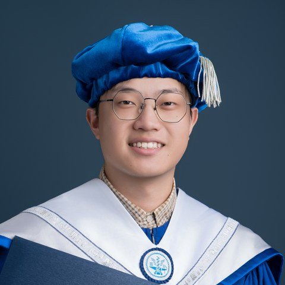

张世羽 Shi-Yu Zhang

我于 2026 年 8 月加入安徽信息工程学院计算机与软件工程学院（大数据与人工智能学院）。此前于 2026 年 6 月获得台湾阳明交通大学工业工程与管理博士学位，专注于智能优化算法与复杂系统建模， 将混合元启发式算法与混合整数规划应用于生产调度、资源配置与工程决策。研究成果发表于 Energy、IEEE Transactions on Consumer Electronics、IEEE Internet of Things Journal、 Journal of Network and Computer Applications 等国际期刊（均为 JCR Q1）。 I joined the School of Computer and Software Engineering (School of Big Data and Artificial Intelligence) at Anhui Institute of Information Technology in August 2026. I received my Ph.D. in Industrial Engineering and Management from National Yang Ming Chiao Tung University in June 2026. My research focuses on intelligent optimization algorithms and complex system modeling, applying hybrid metaheuristics and mixed-integer programming to production scheduling, resource allocation, and engineering decision-making. My work has been published in JCR Q1 journals including Energy, IEEE Transactions on Consumer Electronics, IEEE Internet of Things Journal, and Journal of Network and Computer Applications.
研究方向：Research Interests:
- 智能优化与群体智能Intelligent Optimization & Swarm Intelligence —— 元启发式算法设计、简化和声搜索（SHS）、混合变邻域搜索，及其可解释性与鲁棒性研究。 — Metaheuristic algorithm design, Simplified Harmony Search (SHS), hybrid variable neighborhood search, and their interpretability and robustness.
- 5G MEC 系统部署优化5G MEC System Deployment Optimization —— 面向智慧工厂、智慧农业园区与建筑工地的边缘计算节点协同部署建模与求解。 — Modeling and solving cooperative deployment of edge computing nodes for smart factories, agricultural parks, and construction sites.
- 低碳智慧制造与能源调度Low-carbon Smart Manufacturing & Energy Scheduling —— 碳捕集与封存、碳配额交易、绿电交易约束下的智慧工厂能源管理与生产调度。 — Smart-factory energy management and production scheduling under carbon capture & storage, cap-and-trade, and green energy trading.
近期动态News
- 2026.09论文 Hybrid Aerial-Ground Wireless Power Transfer via UAVs: Dynamic Charging Scheduling for AGVs in Smart Factories 被 IEEE Transactions on Intelligent Vehicles（JCR Q1）接收。Our paper Hybrid Aerial-Ground Wireless Power Transfer via UAVs: Dynamic Charging Scheduling for AGVs in Smart Factories has been accepted by IEEE Transactions on Intelligent Vehicles (JCR Q1).
- 2026.08加入安徽信息工程学院计算机与软件工程学院（大数据与人工智能学院）。Joined the School of Computer and Software Engineering (School of Big Data and Artificial Intelligence) at Anhui Institute of Information Technology.
- 2026.06顺利通过博士学位论文答辩，获台湾阳明交通大学工学博士学位。🎓Successfully defended my dissertation and received my Ph.D. from National Yang Ming Chiao Tung University. 🎓
- 2026.05论文在 International Journal of Production Research（JCR Q1）接收。Paper published online in International Journal of Production Research (JCR Q1).
- 2026.02论文被 IEEE Internet of Things Journal（JCR Q1）接收。Paper accepted by IEEE Internet of Things Journal (JCR Q1).
- 2026.01论文发表于 Journal of Network and Computer Applications（JCR Q1，中科院一区）。Paper published in Journal of Network and Computer Applications (JCR Q1).
- 2025.12荣获中国工业工程学会（CIIE）年会最佳论文奖。Received the Best Paper Award at the Chinese Institute of Industrial Engineers Annual Conference (CIIE 2025).
- 2025.07在 IEEE INDIN 2025（昆明）报告 5G MEC 智慧农场部署研究。Presented our work on 5G MEC-enabled farm deployment at IEEE INDIN 2025, Kunming, China.
论文发表Publications
（加粗为本人；新论文的中科院分区与 IF 待核实）(Bold indicates myself; the CAS ranking and IF for the new article remain to be verified.)
期刊论文Journal Articles
- Optimal multi-access edge computing system deployment in 5G private networks for multi-story construction sites. Journal of Network and Computer Applications, 245, 104375. JCR Q1IF 8.0中科院 1 区CAS Zone 1
- Deployment of 5G MEC systems with safety maintenance and cybersecurity in smart agricultural parks. IEEE Transactions on Consumer Electronics, 71, 8892–8903. JCR Q1IF 10.9中科院 2 区CAS Zone 2
- Hybrid Aerial-Ground Wireless Power Transfer via UAVs: Dynamic Charging Scheduling for AGVs in Smart Factories. IEEE Transactions on Intelligent Vehicles, pp. 1–15. DOI: 10.1109/TIV.2026.3733641. （卷期、具体发表日期、中科院分区与 IF 待核实）(Volume, issue, exact publication date, CAS ranking, and IF pending verification) JCR Q1
- Joint stocker placement and scheduling in automated material handling-enabled reentrant hybrid flow shops. International Journal of Production Research. （在线发表）(Available online) JCR Q1IF 7.3中科院 2 区CAS Zone 2
- IoT-enabled hierarchical energy trading for multi-community sharing in the Internet of Energy. IEEE Internet of Things Journal, 13(10), 21636–21645. JCR Q1IF 8.2中科院 1 区CAS Zone 1
- Energy management scheduling of a smart factory with carbon capture and storage, carbon emission quota cap-and-trade, and green energy trading. Energy, 333, 137231. JCR Q1IF 9.4中科院 1 区 TopCAS Zone 1 (Top)
- Simplified Harmony Search: Novel algorithm design and its applications in engineering design optimization problems. Cluster Computing, 28(12), 772. JCR Q1IF 4.1中科院 3 区CAS Zone 3
会议论文Conference Papers
- Deploying a 5G MEC-enabled farm using hybrid simplified harmony search algorithm. Proc. of the IEEE 23rd International Conference on Industrial Informatics (INDIN 2025), pp. 1–6, Kunming, China.
- An optimal 5G MEC system deployment approach for smart construction sites. Proc. of the 7th International Conference on AI in Information and Communication (ICAIIC 2025), pp. 740–743, Fukuoka, Japan.
- Hybrid crows search and variable neighborhood search for deployment of 5G MEC systems for smart factories. Proc. of the Chinese Institute of Industrial Engineers Annual Conference (CIIE 2023), Taichung, Taiwan, China. 最佳论文奖Best Paper Award
- Predicting the remaining range of electric scooters with a machine learning model. Proc. of the 18th Annual Meeting of the Operations Research Society of Taiwan (ORSTW 2022), Hsinchu, Taiwan, China. 最佳论文奖Best Paper Award
科研项目Research Projects
简化和声搜索算法在工程设计优化问题中的应用Simplified Harmony Search for Engineering Design Optimization
2022.08 – 2023.07台湾地区科技主管部门（NSTC）资助项目 · 算法设计与实现负责人Funded by NSTC · Lead of algorithm design and implementation
主导提出简化和声搜索算法（SHS），以单一随机变量取代传统 HS 的两阶段解生成机制。在三杆桁架、压力容器、悬臂梁等五类经典工程设计基准上，相比 HS、GA、CSA 等算法，收敛速度提升 20–45%，最优解精度提升 10–30%，且稳定性最佳。成果发表于 Cluster Computing。Proposed the Simplified Harmony Search (SHS), replacing the two-stage HMCR/PAR solution generation of classic HS with a single random variable. On five classic engineering design benchmarks (three-bar truss, pressure vessel, cantilever beam, etc.), SHS achieved 20–45% faster convergence and 10–30% better solution accuracy than HS, GA, and CSA, with the best stability. Published in Cluster Computing.
AI 异质数据学习模型开发——电动摩托车剩余里程预测AI Model on Heterogeneous Data — Remaining Range Prediction for Electric Scooters
2022.06 – 2022.12台湾工业技术研究院（ITRI）委托技术服务项目 · 模型开发与实验设计负责人Commissioned by ITRI · Lead of model development and experiment design
设计并执行为期 5 个月的实地实验（20 名驾驶员、5 档载重等级，约 35,000 条数据）。以 XGBoost 为核心，融合体重、载重、温湿度、道路坡度等多源特征，预测精度较传统方法提升 25% 以上。成果获 ORSTW 2022 最佳论文奖，并被合作方采纳用于换电策略与运力优化，项目一次性通过验收。Designed and ran a five-month field experiment (20 riders, 5 load levels, ~35,000 cleaned records). Built an XGBoost-based multi-source feature model (rider weight, payload, temperature/humidity, road slope), improving prediction accuracy by over 25%. Won the Best Paper Award at ORSTW 2022; results were adopted by the industrial partner for battery-swap and fleet optimization.
荣誉奖项Honors & Awards
- 2025最佳论文奖，中国工业工程学会年会（CIIE 2025）Best Paper Award, Chinese Institute of Industrial Engineers Annual Conference (CIIE 2025)
- 2024–2026台湾阳明交通大学陆生杰出奖学金Outstanding Mainland Student Scholarship, NYCU
- 2023台湾阳明交通大学陆生菁英奖学金Elite Mainland Student Scholarship, NYCU
- 2023最佳论文奖，中国工业工程学会年会（CIIE 2023）Best Paper Award, Chinese Institute of Industrial Engineers Annual Conference (CIIE 2023)
- 2023全国工业工程与管理硕士论文竞赛优胜奖（中国台湾）Excellence Award, National IE & Management Master's Thesis Competition (Taiwan, China)
- 2022最佳论文奖，第 18 届台湾作业研究学会年会（ORSTW 2022）Best Paper Award, 18th Annual Meeting of the Operations Research Society of Taiwan (ORSTW 2022)
- 2022台湾阳明交通大学书卷奖（优秀学生）Academic Excellence Award (Shujuan Award), NYCU
- 2021台湾虎尾科技大学书卷奖（优秀学生）Academic Excellence Award (Shujuan Award), NFU
学术服务与组织经历Academic Service
-
台湾阳明交通大学工业工程与管理学系课程委员会学生代表Student Representative, Departmental Curriculum Committee2025.08 – 2026.06
台湾阳明交通大学工业工程与管理学系。参与审议学士班与硕博士班课程结构与培养方案，推动教学制度优化。Department of IE & M, NYCU. Reviewed curriculum structures for undergraduate and graduate programs and promoted teaching quality improvement.
-
VINCI 2024 组委会核心执行人Core Organizer, VINCI 20242024.05 – 2024.12
第 17 届国际视觉信息交流与交互研讨会（VINCI'24）。负责议程设计、嘉宾联络、跨部门统筹与预算管理，吸引全球 14 个国家和地区的 79 名学者注册参会。The 17th International Symposium on Visual Information Communication and Interaction. Led program design, keynote coordination, cross-department logistics, and budgeting; attracted 79 registered scholars from 14 countries and regions.
-
IDO 2024 组委会核心执行人Core Organizer, IDO 20242024.01 – 2024.05
2024 国际信息技术、数据科学与优化会议。全流程统筹会议策划与执行，对接 ACM 完成投稿系统建置、审稿流程管理与论文集出版。The 2024 International Conference on Information Technology, Data Science, and Optimization. Managed end-to-end planning and, in partnership with ACM, the submission system, review workflow, and proceedings publication.
教育经历Education
-
台湾阳明交通大学 · 工业工程与管理 · 博士Ph.D., Industrial Engineering & Management, National Yang Ming Chiao Tung University2023.09 – 2026.06
-
台湾阳明交通大学 · 工业工程与管理 · 硕士M.S., Industrial Engineering & Management, National Yang Ming Chiao Tung University2021.09 – 2023.06
-
台湾虎尾科技大学 · 自动化工程 · 本科B.S., Automation Engineering, National Formosa University2017.09 – 2021.06